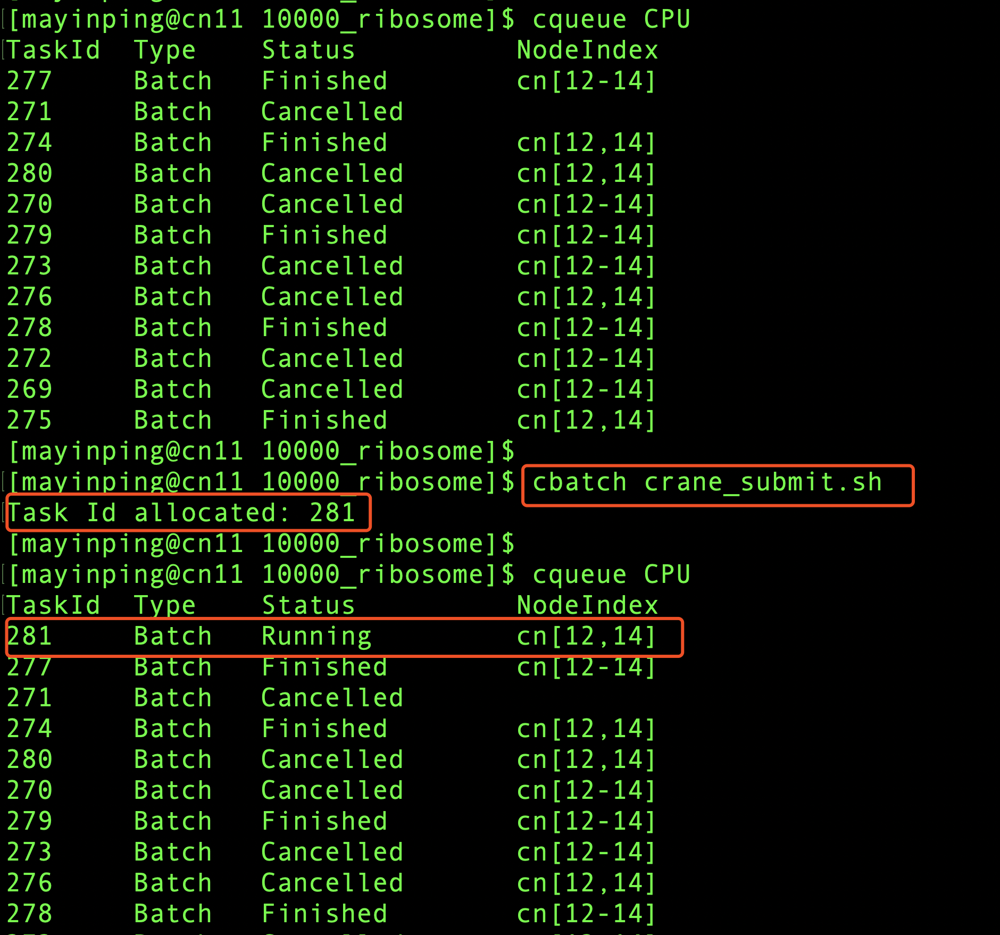

cbatch 提交批处理作业
cbatch主要是将用户描述整个计算过程的脚本传递给作业调度系统，并为作业分配作业号，等待作业调度系统为其分配资源并执行。
首先介绍一个简单的单节点作业的例子:
下列作业将申请一个节点，一个CPU核心，并在计算节点上运行hostname并退出
#!/bin/bash
#CBATCH --task-per-node 1
#CBATCH --node 1
#CBATCH -c 1
#CBATCH --mem 20M
#CBATCH --time 0:3:1
#CBATCH -o job.out
#CBATCH -p CPU
#CBATCH -J Test_Job
hostname
假设上面作业脚本的文件名为crane_submit.sh，通过cbatch命令提交：
cbatch crane_submit.sh
cbatch运行结果展示

主要参数：
- --node： 申请的节点数量
- --task-per-node： 每个节点上运行的任务数量
- -c: 每个节点申请的CPU核心数
- --mem： 每个节点申请的内存大小
- --time： 作业的最长运行时间
- -o： 指定作业的标准输出重定向
- -p： 作业使用的分区/队列
- -J： 作业名
常用环境变量
| 变量名 | 说明 |
|---|---|
| CRANE_JOB_NODELIST | 作业分配的节点列表 |
| %j | 作业号 |
下面介绍提交一个跨节点多核心的例子：
下列作业将在三个节点上运行，每个节点使用4个CPU核心。
#!/bin/bash
#CBATCH -o crane_test%j.out
#CBATCH -p CPU
#CBATCH -J "crane_test"
#CBATCH --node 3
##CBATCH --task-per-node 4
#CBATCH -c 4
#CBATCH --time 50:00:00
# 生成作业分配的节点的machinefile
echo "$CRANE_JOB_NODELIST" | tr ";" "\n" > crane.hosts
#加载MPI运行环境
module load mpich/4.0
#执行跨节点并行任务
mpirun -n 13 -machinefile crane.hosts helloWorld > log